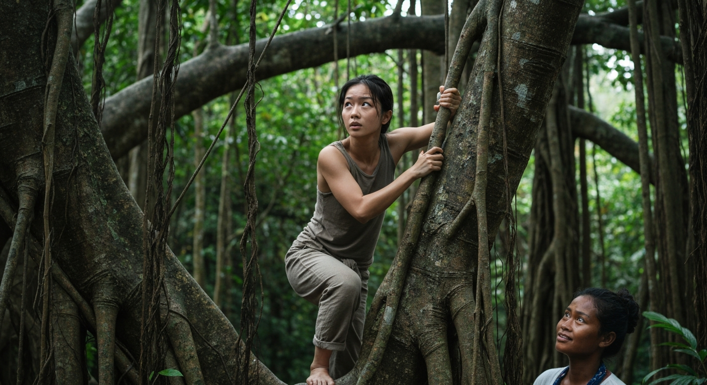
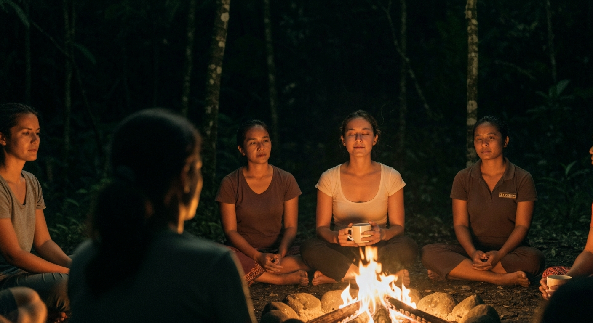
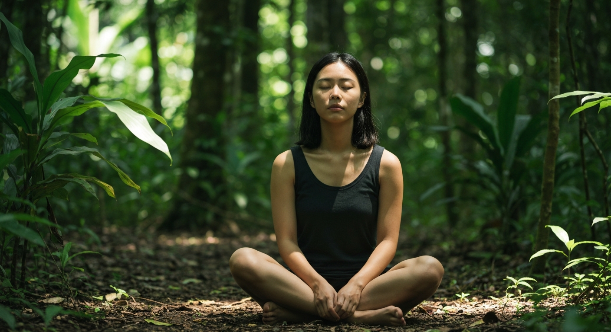

震驚！我在峇里島的秘密瑜珈營，竟解鎖了身體的潛能，從此人生開掛！
第 1 篇
誰說辭職是衝動？我只是想找回失落的自己，卻跌進峇里島的神秘漩渦！
誰說辭職是衝動？我只是不想再重複上個禮拜的午餐菜單！在台北那間廣告公司待了三年，每天都是無限循環的PPT和老闆的「微調」指令，我的靈魂都快被抽乾了。某天，看著鏡子裡眼神呆滯的自己，我突然意識到：我需要逃！這不是任性，是生物本能的求生欲啊！
於是，我訂了一張去峇里島的機票，目的地不是網紅打卡點，而是朋友口中那個「有點神祕、但保證讓你脫胎換骨」的瑜珈營。朋友只說了一句：「那裡沒有網路，只有你自己。」光是這點，就足以讓我心臟漏跳半拍。現代人離開網路三小時都活不下去，更何況是七天？我甚至有點懷疑，這會不會是某種新形態的「數位排毒」邪教？
飛機降落在登巴薩機場時，一股濕熱的、混雜著香料和海風的氣味瞬間撲鼻而來。這裡沒有水泥叢林，只有綠意盎然的稻田和高聳的棕櫚樹。接機的司機大哥，臉上掛著溫和的笑容，但他那雙深邃的眼睛，卻像在探測我內心深處的祕密。我發現，當一個人放下所有熟悉的一切，來到一個完全陌生的環境時，感官會瞬間被放大，連空氣的流動都變得清晰可辨。這是一種前所未有的警覺，也像是一種對未知的期待。我心想，這趟旅程，大概不會只是拍拍美照、喝喝椰子水這麼簡單了。
於是，我訂了一張去峇里島的機票，目的地不是網紅打卡點，而是朋友口中那個「有點神祕、但保證讓你脫胎換骨」的瑜珈營。朋友只說了一句：「那裡沒有網路，只有你自己。」光是這點，就足以讓我心臟漏跳半拍。現代人離開網路三小時都活不下去，更何況是七天？我甚至有點懷疑，這會不會是某種新形態的「數位排毒」邪教？
飛機降落在登巴薩機場時，一股濕熱的、混雜著香料和海風的氣味瞬間撲鼻而來。這裡沒有水泥叢林，只有綠意盎然的稻田和高聳的棕櫚樹。接機的司機大哥，臉上掛著溫和的笑容，但他那雙深邃的眼睛，卻像在探測我內心深處的祕密。我發現，當一個人放下所有熟悉的一切，來到一個完全陌生的環境時，感官會瞬間被放大，連空氣的流動都變得清晰可辨。這是一種前所未有的警覺，也像是一種對未知的期待。我心想，這趟旅程，大概不會只是拍拍美照、喝喝椰子水這麼簡單了。
💬 當你辭職不是為了逃避，而是為了尋找一個連自己都不知道的答案，那才是一場真正的冒險。

第 2 篇
沒有手機訊號的叢林深處，我的第一堂瑜珈課竟是在「爬樹」？
當我終於抵達瑜珈營時，我才明白「叢林深處」這四個字的份量。這裡沒有柏油路，只有蜿蜒的泥土小徑；沒有便利商店，只有一間質樸的茅草屋充當「接待處」。更可怕的是，我的手機訊號，真的就此歸零。那一刻，我感覺自己像被拔掉電池的機器人，全身發冷，一股強烈的焦慮感襲來，彷彿錯過了全世界的訊息。但很快，我發現這不是失去，而是得到——當外在的噪音消失，內在的聲音才開始浮現。
營區導師是一位名叫Kadek的當地女性，她的皮膚曬得黝黑，眼神卻清澈如泉水。她只對我說了一句話：「在這裡，你的身體是你的老師。」我還沒來得及消化這句話的禪意，Kadek就帶我到了一棵巨大的榕樹下，指著樹上錯綜複雜的氣根說：「今天的瑜珈課，從攀爬這棵樹開始。」我傻眼了，我以為的瑜珈是墊上伸展、冥想靜坐，誰知道是「爬樹」？這反直覺的指令瞬間擊碎了我對瑜珈的所有刻板印象。
我戰戰兢兢地嘗試攀爬，樹皮粗糙，氣根堅韌，每一步都得小心翼翼地測試重心。我發現，當我專注於找到手腳的著力點，當我感受身體每一個肌肉的拉伸和核心的穩定時，那些關於手機、工作、未來的焦慮，竟奇蹟般地消失了。我的呼吸變得深沉而規律，心跳聲在耳邊清晰可聞。這不只是一堂體能課，更像是一場與自身對話的儀式。我開始明白，我們常常把「放下」掛在嘴邊，卻很少真正去實踐，而有時，一個完全意料之外的環境，卻能迫使我們放下一切，去感受當下。
營區導師是一位名叫Kadek的當地女性，她的皮膚曬得黝黑，眼神卻清澈如泉水。她只對我說了一句話：「在這裡，你的身體是你的老師。」我還沒來得及消化這句話的禪意，Kadek就帶我到了一棵巨大的榕樹下，指著樹上錯綜複雜的氣根說：「今天的瑜珈課，從攀爬這棵樹開始。」我傻眼了，我以為的瑜珈是墊上伸展、冥想靜坐，誰知道是「爬樹」？這反直覺的指令瞬間擊碎了我對瑜珈的所有刻板印象。
我戰戰兢兢地嘗試攀爬，樹皮粗糙，氣根堅韌，每一步都得小心翼翼地測試重心。我發現，當我專注於找到手腳的著力點，當我感受身體每一個肌肉的拉伸和核心的穩定時，那些關於手機、工作、未來的焦慮，竟奇蹟般地消失了。我的呼吸變得深沉而規律，心跳聲在耳邊清晰可聞。這不只是一堂體能課，更像是一場與自身對話的儀式。我開始明白，我們常常把「放下」掛在嘴邊，卻很少真正去實踐，而有時，一個完全意料之外的環境，卻能迫使我們放下一切，去感受當下。
💬 當你以為在找尋一個答案時，身體卻用最原始的方式，教會你如何提問。

第 3 篇
叢林夜語：當我以為在冥想，竟意外啟動了身體的「自癒模式」？
夜幕降臨，叢林裡的聲音變得格外清晰：蟲鳴、蛙叫、還有遠處不知名的動物嘶吼。在Kadek的帶領下，我們圍坐在營火旁，開始了晚間的冥想。我原本以為冥想就是閉眼放空，但Kadek的要求卻是：「感受你身體內部的流動，感受你與大地的連結。」她遞給我一杯熱騰騰的薑茶，那股辛辣與甘甜在口中交織，暖意從喉嚨直達胃部。
我閉上眼睛，試圖將白天的疲憊和焦慮拋開。一開始，腦袋裡還是會冒出各種雜念，像是明天要吃什麼、家裡貓有沒有乖。但Kadek的聲音像一道溫柔的引導，她讓我專注於呼吸，感受吸氣時的擴張，吐氣時的收縮。慢慢地，我感覺到一股溫暖的能量在脊椎上升，像一道電流，輕輕掃過我全身的每一個細胞。我的四肢不再僵硬，反而感覺輕盈無比，彷彿與周圍的空氣融為一體。
更讓我驚訝的是，我感覺到身體深處的某些緊繃和痠痛，竟然在這種「無為」的狀態下，漸漸地鬆開了。那是一種我從未體驗過的放鬆，不是睡著，卻比睡著更深層。Kadek說，這就是身體的「自癒模式」被啟動了。我們平時過度使用大腦，卻忽略了身體的智慧。當我們真正學會傾聽身體的聲音，它會告訴我們如何修復、如何平衡。那一晚，我睡得格外香甜，夢裡沒有工作，沒有煩惱，只有我自己在叢林中自由奔跑，而當我醒來時，一個完全意想不到的挑戰正等著我。
我閉上眼睛，試圖將白天的疲憊和焦慮拋開。一開始，腦袋裡還是會冒出各種雜念，像是明天要吃什麼、家裡貓有沒有乖。但Kadek的聲音像一道溫柔的引導，她讓我專注於呼吸，感受吸氣時的擴張，吐氣時的收縮。慢慢地，我感覺到一股溫暖的能量在脊椎上升，像一道電流，輕輕掃過我全身的每一個細胞。我的四肢不再僵硬，反而感覺輕盈無比，彷彿與周圍的空氣融為一體。
更讓我驚訝的是，我感覺到身體深處的某些緊繃和痠痛，竟然在這種「無為」的狀態下，漸漸地鬆開了。那是一種我從未體驗過的放鬆，不是睡著，卻比睡著更深層。Kadek說，這就是身體的「自癒模式」被啟動了。我們平時過度使用大腦，卻忽略了身體的智慧。當我們真正學會傾聽身體的聲音，它會告訴我們如何修復、如何平衡。那一晚，我睡得格外香甜，夢裡沒有工作，沒有煩惱，只有我自己在叢林中自由奔跑，而當我醒來時，一個完全意想不到的挑戰正等著我。
💬 當你以為只是在放空，其實身體正在悄悄啟動，一段你從未想像過的潛能。

第 4 篇
清晨的叢林喚醒術：當我以為要被蚊子抬走，Kadek卻讓我「聽見」植物在呼吸？
隔天清晨，我被一陣奇特的聲響喚醒——不是鬧鐘，是叢林裡此起彼落的鳥鳴和遠處的猴子叫。當我還在迷迷糊糊地想著，會不會有蚊子大軍把我抬走時，Kadek已經帶著我們來到一處陽光灑落的林間空地。她沒有多說，只是輕輕地指了指周圍的樹木，示意我們閉上眼睛。我心裡OS：又來？難道又要冥想？但這次的指令是「感受」。我嘗試著深呼吸，讓清新的空氣充滿肺部。漸漸地，我發現自己不再專注於那些惱人的蟲鳴，而是開始「聽」到一些更細微的聲音——微風拂過樹葉的沙沙聲，土壤裡某種微生物的蠕動，甚至是一種難以言喻的、植物緩慢生長的「脈動」。這不是我過去在台北公園散步時會有的感覺，那種城市裡的自然總是隔著一層喧囂。但在這裡，感官被放大，我彷彿真的能聽見生命在流動，甚至覺得自己的心跳都和周遭的樹木一起脈動。這是一種前所未有的連結感，讓我意識到，原來我一直都活在一個巨大的、充滿生命力的網絡之中，只是過去太忙碌，從沒停下來傾聽過。
💬 叢林深處的清晨，我以為要被蚊子抬走，卻意外聽見了植物的「心跳」！
第 5 篇
叢林裡的「野食」盛宴：當我以為只能吃草，Kadek卻端出了「大地魔法」？
瑜珈課後的午餐，我心裡其實有點忐忑。畢竟這裡鳥不生蛋，我腦中自動浮現電影裡茹毛飲血的畫面，想著會不會只能啃樹皮、吃草果腹。結果，Kadek卻像變魔術一樣，從茅草屋旁的簡易廚房端出一道道「野食」盛宴。那些蔬菜和水果，有些我甚至叫不出名字，但每一口都充滿了土地的芬芳和陽光的味道。有烤得金黃的木薯，甜而不膩；還有用不知名香草燉煮的蔬菜湯，湯頭清甜回甘。Kadek解釋說，這些食材都來自營地周圍的叢林，是她和當地居民每天清晨採摘的。她還特別提到一種看起來像小芋頭的根莖類植物，說它能「滋養靈魂」。我半信半疑地咬了一口，口感綿密，果然有一種說不上來的安穩感。這頓飯讓我明白，原來「食物」不只是填飽肚子，它更是大地的贈禮，蘊含著滋養身心的能量。在台北，我習慣了外送和超商的便利，食物對我來說只是一種「選項」。但在這裡，每一道菜都連結著泥土、陽光和Kadek的手作溫度，它是一種儀式，一種與自然的深刻連結。我從未想過，一頓簡單的午餐，也能成為一場療癒的體驗，讓我在味蕾和心靈上，都感受到了前所未有的豐盛。
💬 以為叢林只能啃樹皮？Kadek卻用「大地魔法」讓我的味蕾和靈魂都開掛了！